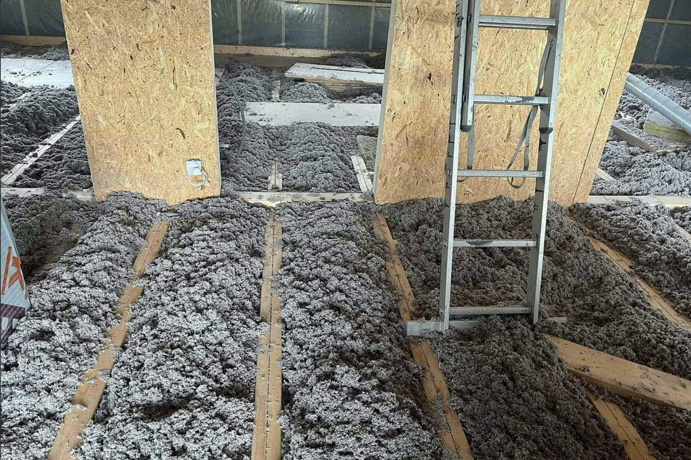

Golvisolering
Kalla golv kan vara ett tecken på att bjälklaget behöver ses över. Denisol hjälper dig med isolering av golv och bjälklag med cellulosa.
Få råd & en offert
En skönare grund att stå på.
I äldre hus kan exempelvis sågspånsisolering ha sjunkit ihop med tiden. Om och hur isoleringen ska kompletteras beror på konstruktionens skick och åtkomst. Vi hjälper dig att reda ut förutsättningarna innan du bestämmer dig.
Prata om ditt projektHjälp med resten av huset?
Vad kan vi göra
för ditt hus?
Börja med ett samtal. Vi hjälper dig med råd och en kostnadsfri offert till fast pris.